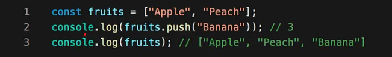
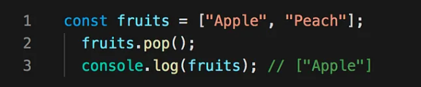
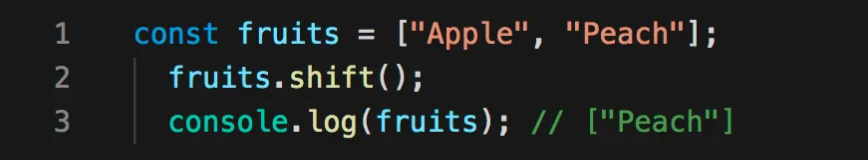
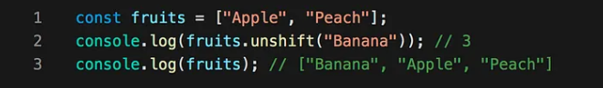

Array Method
Arrays provide a lot of methods. To make things easier
1. push( )
This method adds one or more elements to the end of array and returns the new length of the array.

2. pop( )
This method removes the last element from the end of array and returns that element.

3. shift( )
This method removes the first element from an array and returns that element.

4. unshift( )
This method adds one or more elements to the beginning of an array and returns the new length of the array.

Click button to see example of combined Array Method.